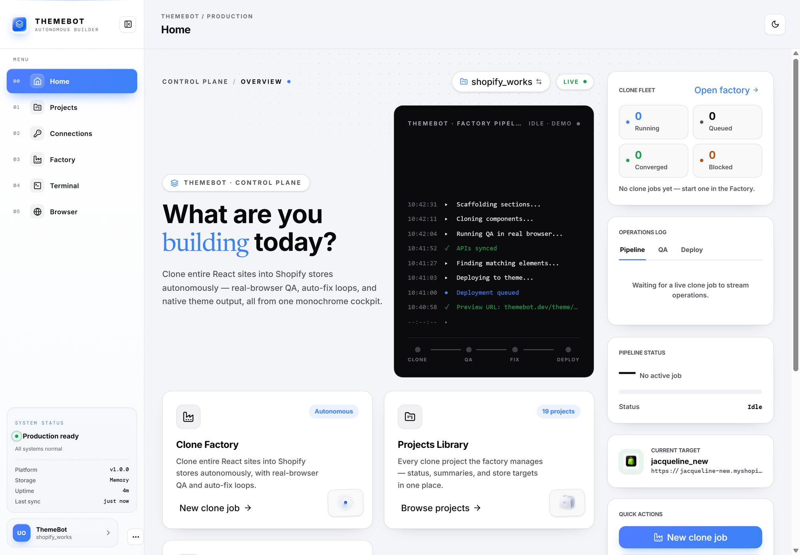
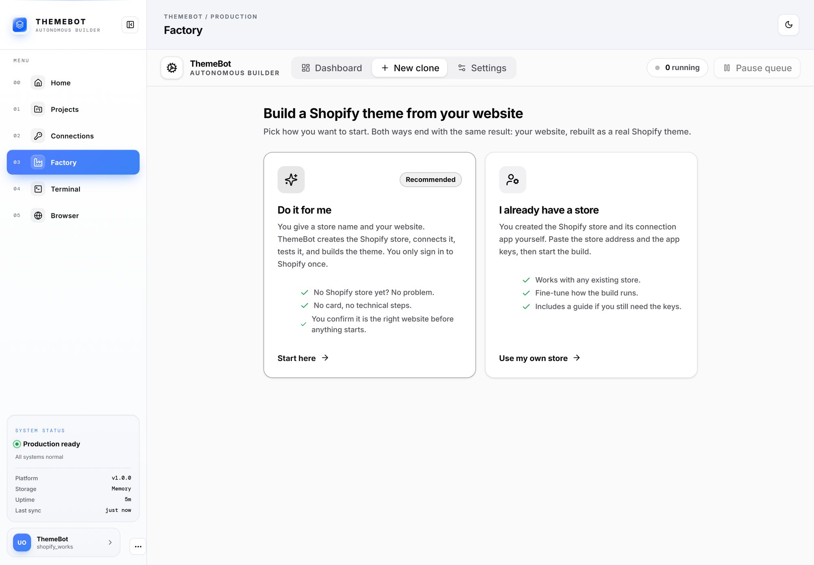
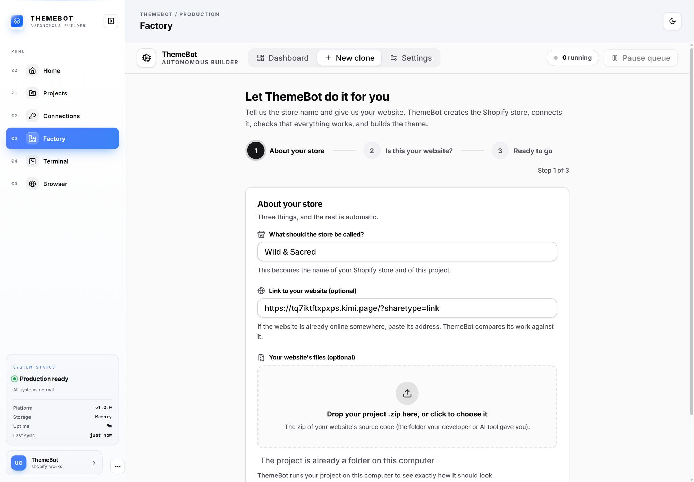
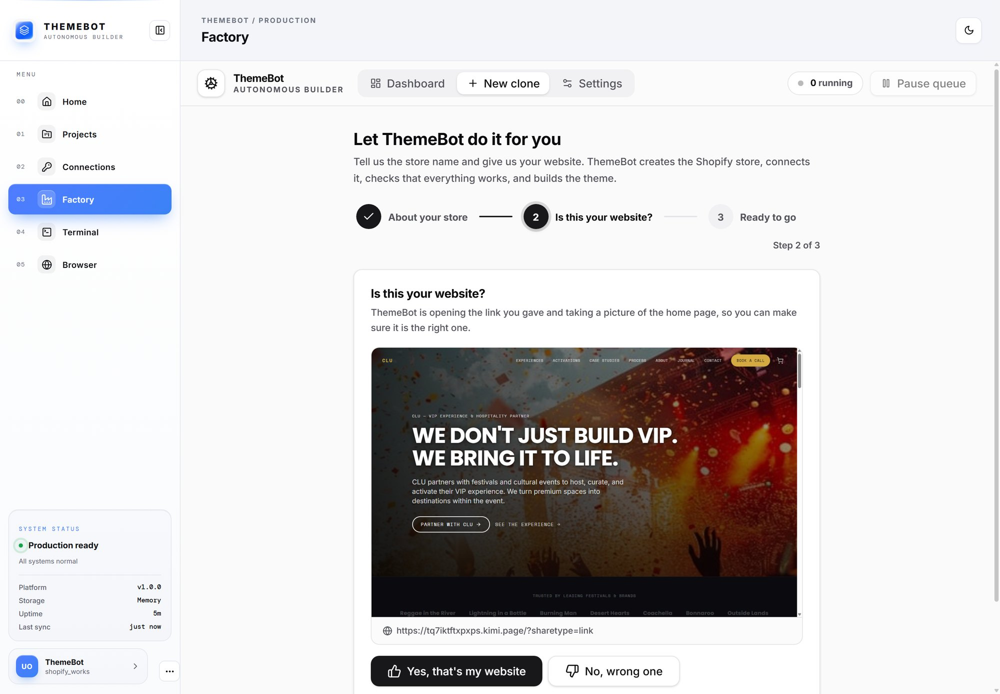
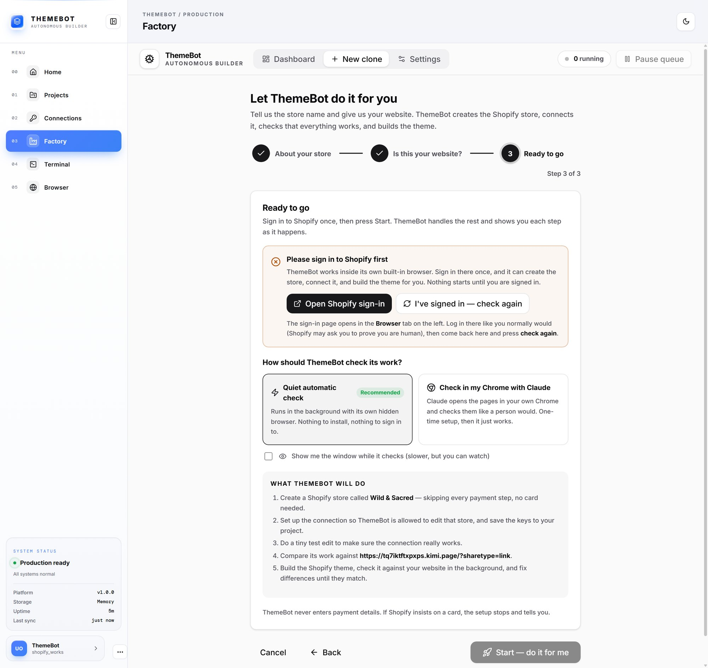
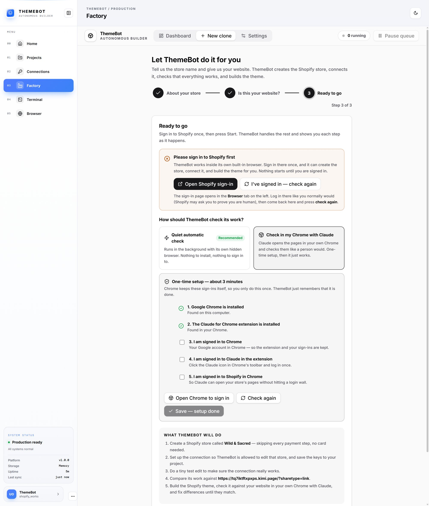
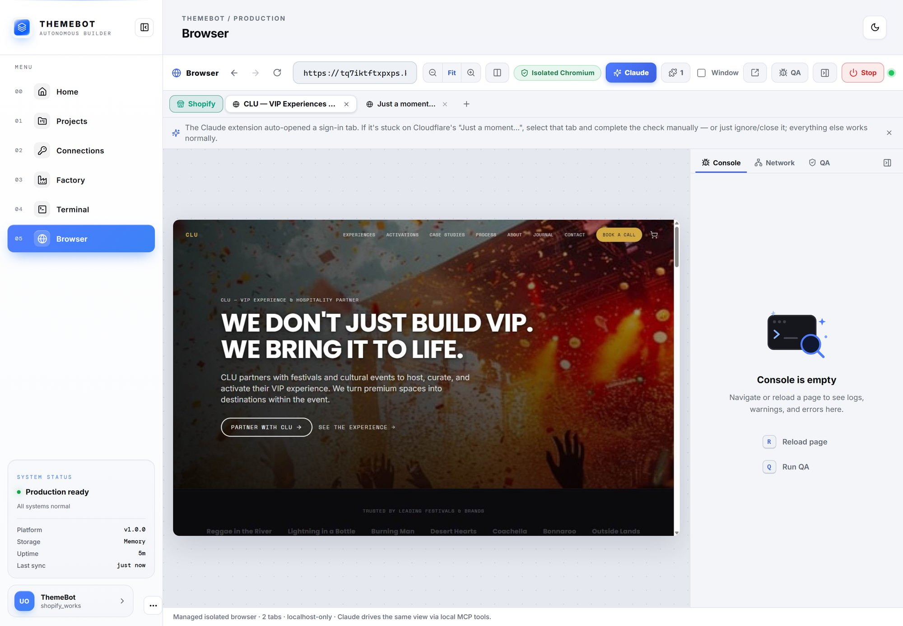
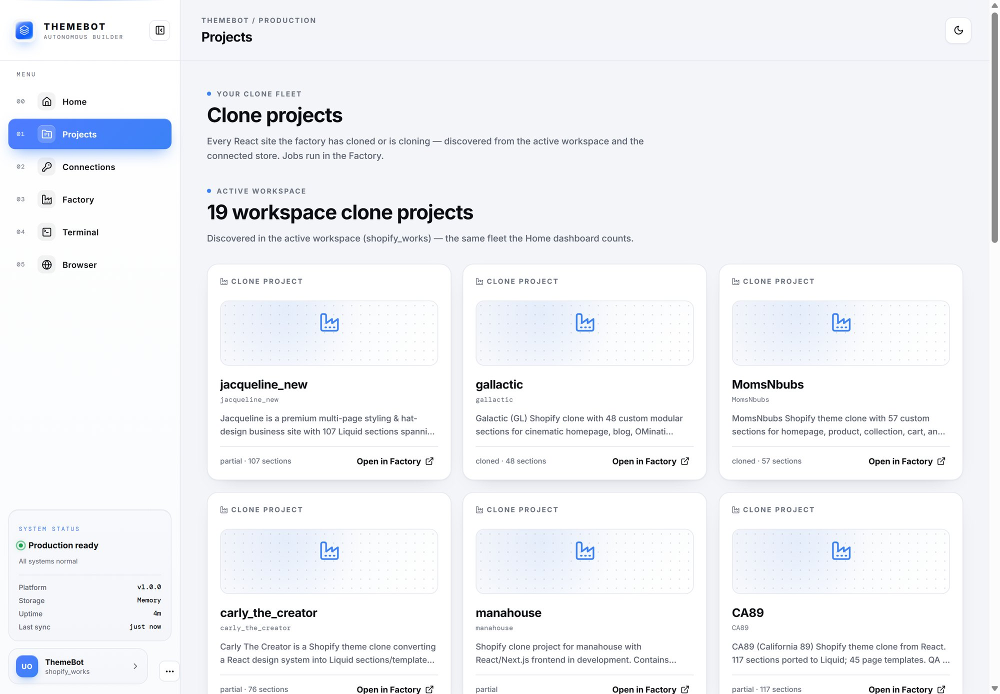

<style>
  :root { --ink:#111827; --muted:#5b6472; --line:#e5e7eb; --soft:#f5f6f8; --accent:#2f5bea; --ok:#15803d; --okbg:#ecfdf3; --warn:#b45309; --warnbg:#fff7ed; --next:#475569; --nextbg:#f1f5f9; }
  * { box-sizing:border-box; }
  @page { size:A4 landscape; margin:12mm 12mm 14mm; }
  html { -webkit-print-color-adjust:exact; print-color-adjust:exact; }
  body { margin:0; font-family:"Segoe UI", Arial, Helvetica, sans-serif; color:var(--ink); font-size:10.5pt; line-height:1.5; background:#fff; }
  .page { break-after:page; height:180mm; display:flex; flex-direction:column; }
  .page:last-child { break-after:auto; }
  .head { display:flex; align-items:baseline; justify-content:space-between; gap:12px; border-bottom:1px solid var(--line); padding-bottom:6px; margin-bottom:8px; }
  .head h2 { font-size:15pt; margin:0; letter-spacing:-.01em; display:flex; align-items:center; gap:10px; }
  .head .n { display:inline-flex; width:26px; height:26px; border-radius:50%; background:var(--accent); color:#fff; font-size:11pt; align-items:center; justify-content:center; font-weight:700; }
  .head .tag { font-size:8.5pt; color:var(--muted); text-transform:uppercase; letter-spacing:.1em; font-weight:700; }
  .cap { font-size:11pt; color:var(--ink); margin:0 0 8px; }
  .cap b { color:var(--accent); }
  .frame { flex:1; min-height:0; display:flex; align-items:flex-start; justify-content:center; }
  .frame img { max-width:100%; max-height:100%; border:1px solid var(--line); border-radius:8px; box-shadow:0 6px 24px -14px rgba(0,0,0,.35); object-fit:contain; }
  .side { display:grid; grid-template-columns:1.25fr 1fr; gap:16px; flex:1; min-height:0; align-items:start; }
  .side .frame { height:100%; }
  .side .frame img { max-height:158mm; }
  .notes { font-size:10.5pt; }
  .notes h3 { font-size:11.5pt; margin:4px 0 4px; }
  .notes ul { margin:0 0 10px 18px; padding:0; } .notes li { margin:0 0 5px; }
  .callout { background:var(--soft); border-left:4px solid var(--accent); padding:8px 12px; border-radius:6px; margin-top:8px; font-size:10pt; }

  /* cover */
  .cover { justify-content:center; }
  .cover h1 { font-size:34pt; margin:0 0 6px; letter-spacing:-.02em; }
  .cover .sub { font-size:15pt; color:var(--muted); margin:0 0 18px; }
  .lead { font-size:13pt; background:var(--soft); border-left:5px solid var(--accent); padding:14px 18px; border-radius:8px; margin:0 0 22px; max-width:230mm; }
  .steps { display:grid; grid-template-columns:repeat(5,1fr); gap:10px; }
  .step { background:#fff; border:1px solid var(--line); border-radius:10px; padding:12px 12px 14px; }
  .step b { display:flex; align-items:center; gap:8px; font-size:11pt; margin-bottom:6px; }
  .step .n { display:inline-flex; width:24px; height:24px; border-radius:50%; background:var(--accent); color:#fff; font-size:10pt; align-items:center; justify-content:center; }
  .step p { font-size:9.6pt; color:var(--muted); margin:0; line-height:1.45; }
  .meta { color:var(--muted); font-size:9.5pt; margin-top:22px; }

  /* status */
  table { width:100%; border-collapse:collapse; font-size:10pt; }
  th, td { text-align:left; padding:6px 9px; border-bottom:1px solid var(--line); vertical-align:top; }
  th { font-size:8.4pt; text-transform:uppercase; letter-spacing:.06em; color:var(--muted); background:var(--soft); }
  .pill { display:inline-block; font-size:8.6pt; font-weight:700; padding:2px 9px; border-radius:999px; white-space:nowrap; }
  .done { background:var(--okbg); color:var(--ok); } .prog { background:var(--warnbg); color:var(--warn); } .nxt { background:var(--nextbg); color:var(--next); }
  .cols { display:grid; grid-template-columns:1.5fr 1fr; gap:20px; }
</style>

<!-- 1. Cover -->
<section class="page cover">
  <h1>ThemeBot</h1>
  <p class="sub">Your website, turned into a real Shopify store — automatically.</p>
  <div class="lead"><b>In one sentence:</b> you give ThemeBot a website and a store name. It creates the Shopify store, connects to it, rebuilds the website as a proper Shopify theme, then checks and fixes its own work until the two match.</div>
  <div class="steps">
    <div class="step"><b><span class="n">1</span> Tell it about the store</b><p>Store name, website link, and/or the website's files.</p></div>
    <div class="step"><b><span class="n">2</span> Confirm the website</b><p>ThemeBot shows you a picture of the site. You say "yes, that's the one".</p></div>
    <div class="step"><b><span class="n">3</span> Sign in once</b><p>One Shopify sign-in. Nothing starts before that.</p></div>
    <div class="step"><b><span class="n">4</span> ThemeBot sets up the store</b><p>Creates the store (no card), connects to it, runs a test edit.</p></div>
    <div class="step"><b><span class="n">5</span> Build, check, fix</b><p>Rebuilds the site as a theme, compares, fixes, reports.</p></div>
  </div>
  <p class="meta">Progress report · 14 September 2026 · Every picture in this document is a real screen from the working app.</p>
</section>

<!-- 2. Home -->
<section class="page">
  <div class="head"><h2><span class="n">1</span> The control room</h2><span class="tag">Home screen</span></div>
  <p class="cap">One place to <b>start a build</b>, see every project, follow progress, and watch ThemeBot work in its built-in browser.</p>
  <div class="frame"></div>
</section>

<!-- 3. Choose -->
<section class="page">
  <div class="head"><h2><span class="n">2</span> Choose how to start</h2><span class="tag">New build</span></div>
  <p class="cap"><b>"Do it for me"</b> if there is no Shopify store yet. <b>"I already have a store"</b> if one was set up by hand. Same result either way.</p>
  <div class="frame"></div>
</section>

<!-- 4. About your store -->
<section class="page">
  <div class="head"><h2><span class="n">3</span> Tell it about the store</h2><span class="tag">Step 1 of 3</span></div>
  <p class="cap">A <b>name</b>, an optional <b>link</b>, and a drop zone for the website's files. Three things, then it is automatic.</p>
  <div class="frame"></div>
</section>

<!-- 5. Is this your website -->
<section class="page">
  <div class="head"><h2><span class="n">4</span> "Is this your website?"</h2><span class="tag">Step 2 of 3</span></div>
  <p class="cap">ThemeBot opens the site (or runs the uploaded files) and shows a <b>picture of the home page</b> before anything is created. One click to confirm.</p>
  <div class="frame"></div>
</section>

<!-- 6. Ready to go -->
<section class="page">
  <div class="head"><h2><span class="n">5</span> Ready to go</h2><span class="tag">Step 3 of 3</span></div>
  <div class="side">
    <div class="frame"></div>
    <div class="notes">
      <h3>Sign in once, then press Start</h3>
      <ul>
        <li><b>The sign-in check.</b> ThemeBot looks at whether its browser is signed in to Shopify. If not, it opens the sign-in page and waits. The Start button stays locked until you are in.</li>
        <li><b>How it checks its work.</b> A quiet automatic check in the background (recommended), or a check inside your own Chrome with Claude.</li>
        <li><b>What will happen.</b> A plain list of every step ThemeBot is about to take, written for the person pressing the button.</li>
      </ul>
      <div class="callout">ThemeBot never enters payment details. If Shopify insists on a card, the setup stops and says so.</div>
    </div>
  </div>
</section>

<!-- 7. Chrome setup -->
<section class="page">
  <div class="head"><h2><span class="n">6</span> Optional: check in your own Chrome</h2><span class="tag">One-time setup</span></div>
  <div class="side">
    <div class="frame"></div>
    <div class="notes">
      <h3>Three minutes, done once, remembered forever</h3>
      <ul>
        <li>Chrome and the Claude extension are <b>detected automatically</b> (the green ticks).</li>
        <li>The three sign-ins are confirmed by you, once. Chrome keeps them; ThemeBot only remembers that the setup is complete.</li>
        <li>Prefer not to bother? Pick the quiet automatic check instead and skip this entirely.</li>
      </ul>
    </div>
  </div>
</section>

<!-- 8. Browser -->
<section class="page">
  <div class="head"><h2><span class="n">7</span> Watch it work</h2><span class="tag">Built-in browser</span></div>
  <p class="cap">ThemeBot has its <b>own browser inside the app</b>. This is it, live on the website being rebuilt — the same window where the store gets created and checked.</p>
  <div class="frame"></div>
</section>

<!-- 9. Projects -->
<section class="page">
  <div class="head"><h2><span class="n">8</span> Every project in one list</h2><span class="tag">Projects</span></div>
  <p class="cap">Each build is a card: which website, which store, how far along. <b>19 projects</b> from earlier work are already in the library.</p>
  <div class="frame"></div>
</section>

<!-- 10. Status -->
<section class="page">
  <div class="head"><h2><span class="n">9</span> Where we are</h2><span class="tag">14 September 2026</span></div>
  <div class="cols">
    <table>
      <tr><th style="width:44%">Piece</th><th>Status</th></tr>
      <tr><td>Control room &amp; project list</td><td><span class="pill done">Done</span></td></tr>
      <tr><td>Guided "do it for me" flow (the three screens)</td><td><span class="pill done">Done</span></td></tr>
      <tr><td>Website preview &amp; confirmation</td><td><span class="pill done">Done &amp; tested</span></td></tr>
      <tr><td>Shopify sign-in check</td><td><span class="pill done">Done &amp; tested</span></td></tr>
      <tr><td>Store connection, keys, test edit</td><td><span class="pill done">Done</span></td></tr>
      <tr><td>Automatic store creation (no card)</td><td><span class="pill prog">Built — first live run pending</span></td></tr>
      <tr><td>Build → check → fix loop</td><td><span class="pill done">Done</span></td></tr>
      <tr><td>Quality-check options (quiet / own Chrome)</td><td><span class="pill done">Done</span></td></tr>
      <tr><td>Route for people who already have a store</td><td><span class="pill done">Done</span></td></tr>
      <tr><td>End-of-build result report with before/after pictures</td><td><span class="pill nxt">Next</span></td></tr>
      <tr><td>Public release: name, pricing, hosting, Shopify listing</td><td><span class="pill nxt">Next</span></td></tr>
    </table>
    <div class="notes">
      <h3>What happens next</h3>
      <ul>
        <li><b>First full live run.</b> Create a real store from scratch through "do it for me", end to end, and record it.</li>
        <li><b>Result report.</b> When a build finishes, ThemeBot hands over a one-page summary with before/after pictures.</li>
        <li><b>Release decisions.</b> Final name, pricing, and hosting.</li>
      </ul>
      <div class="callout">A live walkthrough takes about ten minutes: pick "Do it for me", drop in a website, confirm the picture, sign in once, and watch the steps tick through on screen.</div>
    </div>
  </div>
</section>
